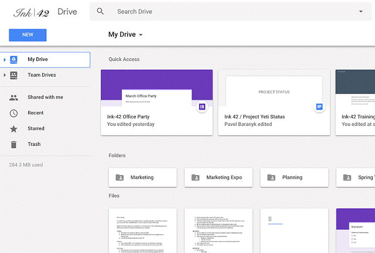
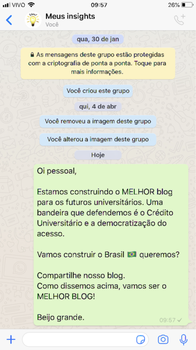
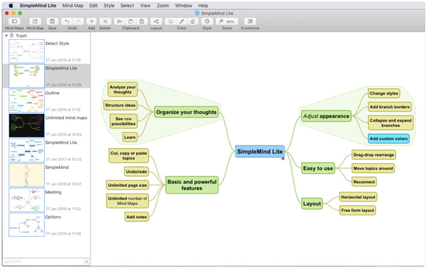

Hoje em dia, é praticamente impossível pensar nossa vida sem os aplicativos no celular. Já pensou como seria
se de uma hora para outra o Whatsapp parasse de funcionar? Vamos voltar para o SMS por conta da facilidade
de comunicação, mas com toda certeza não será a mesma experiência.
Para facilitar a sua vida universitária ou até mesmo no dia a dia das pessoas que querem ingressar na
universidade (saiba o caminho aqui), criamos uma lista excelente de aplicativos que são importantes que você
aprenda a usar. Como sou muito bom, vou adicionar como bônus alguns hacks de produtividade ao decorrer do
texto.
Segura essa:
Trello
Com este aplicativo você pode organizar sua tela como se fosse uma parede de post-it, aqueles papeizinhos
quadradinhos e geralmente amarelo que colocamos em tudo que é lugar para lembrar algo.

Hack - Sempre que precisar fazer algum trabalho da facul, estudar um tema que necessite dedicação ou a
ajuda de um amigo, compartilhe o seu Trello com ele. A interação é excelente e a sua produtividade
aumenta muito, aliás, se comunicar por várias plataformas e alimentar outras é totalmente improdutivo.
Google Drive
Ok, você já salva suas fotos na nuvem, mas utiliza todos os seu potencial? Aqui no Guia Universidade
utilizamos todos os dias para levar o melhor conteúdo para vocês, nossos queridos leitores. Com o Google
Drive você pode escrever um texto AO MESMO TEMPO que seu amigo está escrevendo outro trecho, e também é
possível para fazer slides e planilhas. Você pode criar pastas para que façam upload dos arquivos que
vão precisar.

Hack - É muito comum em um curso técnico, graduação ou pós graduação, produzir conteúdo para avaliação.
Um erro que acontece muito é quando compartilhamos o link com autorização para editar. Basicamente você
pode compartilhar um link autorizando pessoas a visualizar ou editar, mas já pensou, perder aquele
trabalho super importante de final de semestre? Olha que acontece em, quem avisa amigo é.
Zoom
Você ainda precisa se reunir na casa de amigos para desenvolver trabalhos? Perde horas no trânsito para
fazer tarefas simples? O Zoom tem a proposta bem parecida com o Skype, porém mais simples. Com poucos
cliques você pode criar uma sala ao vivo e compartilhar o link com seus amigos. Economizar tempo também
é produtividade.
Hack - Uma funcionalidade incrível do Zoom é a possibilidade de ter um número grande de participantes na
mesma conversa. Assim como outros aplicativos de meeting, o Zoom possibilita compartilhar a tela e
melhorar a comunicação entre os participantes. Lembre-se, é melhor se comunicar de forma eficiente uma
vez do que parar para explicar a cada passo.
WhatsApp
Ok, eu assumo, não resisti. O WhatsApp é muito bom e agiliza nossa comunicação, podemos enviar fotos,
vídeos, documentos e áudio. Como somos um blog que além de criar conteúdo valioso para você, também quer
te alertar, lá vai. Cuidado com as conversas paralelas, conversar de forma objetiva é produtivo, porém
parar o que está fazendo para responder mensagens fora do contexto, é procrastinação.

Hack - Agora vamos falar do pulo do gato! Como vocês podem ver na imagem acima, eu criei um grupo sozinho
no WhatsApp. Como fazer? Simples demais! Você cria o grupo, adiciona uma pessoa qualquer e logo depois
exclui. Ok, mas e o hack? O hack é você favoritar esse grupo para que ele sempre apareça no Top 1 da sua
lista. Eu chamei essa conversa de Meus Insights. Nele compartilho comigo ;) lembretes, conteúdo que
quero criar e algumas vezes compromissos que não posso esquecer de forma alguma. O grande lance é que
utilizamos o WhatsApp várias vezes ao dia, mas me responde, quantas vezes por dia você acessa o
calendário do seu celular?
SimpleMind Lite
Já ouviu falar de Mindmap, ou no bom português Mapas mentais? Essa é uma das melhores formas para
estudar, resumir e comunicar que eu conheço. Em poucos minutos você faz um Mindmap que muitas vezes
apresenta conteúdo que demoraria horas para explicar. Simples, não é? Me lembro que durante a faculdade
eu me desafiei e fiz um gigante para explicar para leigos o mercado financeiro e sua dinâmica. Irado!

Hack - Você pode criar Mindmap sobre absolutamente tudo. Quando termino de ler um livro, eu faço um
Mindmap com os tópicos que mais me chamaram atenção. Por que não fazer do livro todo? O objetivo é que
as informações sejam fáceis de serem acessadas, e convenhamos, você não precisa ter lembrete para
trechos e insights que já foram absorvidos pelo seu cérebro.